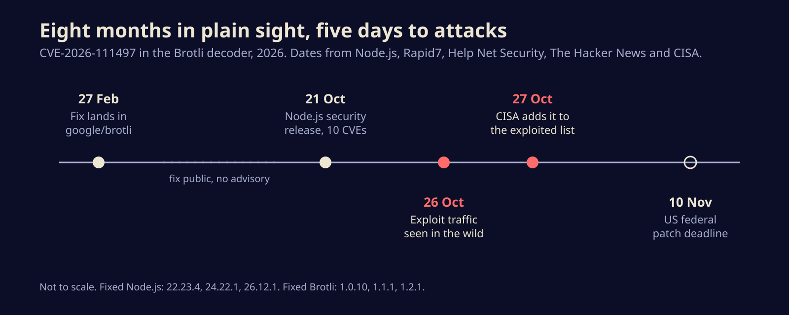
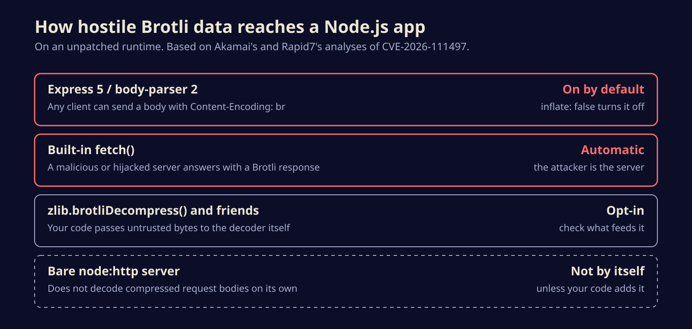

Node2Shell is under attack: a Brotli bug that sat fixed but unshipped for eight months
A memory bug in Google's Brotli decoder now has exploit traffic and a spot on CISA's exploited list. Here is who is exposed, which Node.js code paths reach it, and how to patch today.
If you run Node.js anywhere, upgrade it today. On October 27 CISA added CVE-2026-111497, a memory corruption bug in the Brotli decompressor that Node.js bundles, to its catalog of vulnerabilities attackers are actively using, a day after a threat intelligence firm logged the first exploit traffic aimed at it.
The bug has three nicknames already (Node2Shell, Broccoli2Shell, Brotli2Shell), and the spread of names tells you something: it is not really a Node.js bug. It lives in Google's Brotli library, which sits inside a long list of runtimes, proxies and clients you may not think of as "Brotli software" at all.
What actually breaks
Brotli is the compression format behind the br you see in HTTP Content-Encoding headers. Feeding a decoder a malformed stream should end in a clean error. Here it did not.
According to the Node.js advisory, an invalid block switch inside a compressed stream was treated as a temporary shortage of input rather than a fatal format error. So the streaming decoder kept waiting, and kept copying incoming bytes into an internal buffer only eight bytes long. Everything past those eight bytes landed on whatever memory came next.
Node.js lists three outcomes: a crash, a leak of process memory, or remote code execution. Node.js rates it high; Google, which assigned the CVE, scores it 9.2 out of 10 on CVSS v4, which is critical. The finders were OpenAI's Codex Security team, credited by name in the advisory.
Fixed in February, shipped in October
This is the part that should bother anyone who maintains a dependency.
Per Help Net Security, the fix was committed to the public google/brotli repository on February 27, 2026, with no release and no advisory. For eight months, anyone reading the commit history could see exactly which check was missing, while nearly everyone downstream kept shipping the old code. Node.js disclosed the flaw in its October 21 security release, one of 10 CVEs in that batch. Fixed Brotli releases (1.0.10, 1.1.1 and 1.2.1) followed this week.
Then the clock ran fast. On Monday, October 26, the threat intelligence firm ELLIO reported in-the-wild exploit attempts against Node.js 24.22.0, from an address it had already seen pushing exploits for PHP2Shell, the PHP takeover bugs we covered on Sunday. ELLIO judged the operator to be running mass exploitation rather than a targeted job. Public proof-of-concept code is on GitHub, and Imperva showed working code execution against the official Node.js 24.22.0 image, though it took several tries.

Are you actually exposed?
A vulnerable decoder on disk is not the same as a vulnerable app. Rapid7 and Akamai both make the point: what matters is whether attacker-controlled Brotli data can reach that decoder. In Node.js, Akamai traced the common routes.
- Express 5 and body-parser 2 decode request bodies sent with
Content-Encoding: brout of the box, because theinflateoption defaults to true. Any client on the internet can send one. This is the big one. - The built-in
fetch()decompresses Brotli responses automatically. Here the attacker is the server you call, or anyone who can sit in front of it. - Direct calls to
zlib.brotliDecompress()orcreateBrotliDecompress()are exposed when you feed them untrusted bytes. - A bare
node:httpserver does not decode compressed bodies on its own.

Outside Node.js, Tenable's list of affected software (via Help Net Security) includes Bun, .NET, Envoy, Istio, Python HTTP clients, FFmpeg, Apache Arrow and ClickHouse. Most maintainers have shipped updates, and Linux distributions are rolling packages now.
What to do this afternoon
- Check your runtime. Run
node -von hosts and inside containers. You want 22.23.4, 24.22.1 or 26.12.1 or later. - Leave dead release lines. Node.js 20.x and older, 23.x and 25.x get no fix. Move to a supported line.
- Rebuild, do not just bump. Containers carry their own Node binary. Update base images, rebuild, redeploy and restart, then confirm the running process reports the fixed version.
- Hunt the other copies. Bun below 1.4.4, Python
brotliandbrotlicffipackages, Envoy and Istio, and distrobrotlipackages each need their own update. - If you truly cannot patch yet, Node.js offers no workaround. Rapid7's stopgap is to close the paths that decompress untrusted Brotli data; for Express 5 that means setting
inflate: falseon the body parsers, which makes compressed bodies fail with HTTP 415.
The same list had a shop problem
CISA's October 27 update added one other entry: CVE-2026-48356, a critical file upload flaw in Adobe Commerce and Magento that Adobe fixed in its July bulletin, APSB26-73. The security firm Sansec ties it to a campaign it calls PolyShell, which plants a loader in a Magento CMS block. Heise, citing Sansec, puts the toll at 953 stores since July 2025. If you run a Magento store, patching is step one; checking CMS blocks and the upload directories for planted files is step two, since an update does not remove what is already there.
The bigger picture
The Brotli fix was public for eight months, and it took attackers five days from the Node.js disclosure to start firing. Code-reading models found this bug, and code-reading models are just as good at spotting which upstream commit fixed something nobody has shipped yet. Silent fixes in widely bundled libraries used to buy time. That time is gone, so the gap between "fixed upstream" and "fixed in your container" is now the whole attack window.
Sources
- Node.js: October 2026 security releases
- CISA: CISA adds two known exploited vulnerabilities to catalog
- Rapid7: CVE-2026-111497, critical out-of-bounds write in the Node.js Brotli decoder
- Akamai: Inside Node2Shell, a closer look at CVE-2026-111497
- Help Net Security: Brotli bug reaches far beyond Node.js
- The Hacker News: Adobe Commerce PolyShell attacks breach hundreds of stores as Brotli exploit traffic emerges
Written with AI for Bade's Mod Shop. Facts are checked against the sources above on the day of publishing; if one is wrong, open an issue.